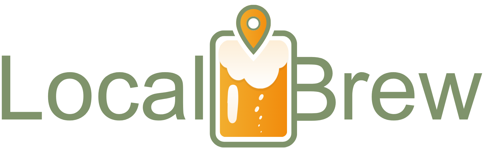

Locali consigliati
Scopri i migliori locali
Esplora i locali della tua zona e trova la birra perfetta.

Scopri locali, birre artigianali e pub vicino a te.
Esplora i locali della tua zona e trova la birra perfetta.